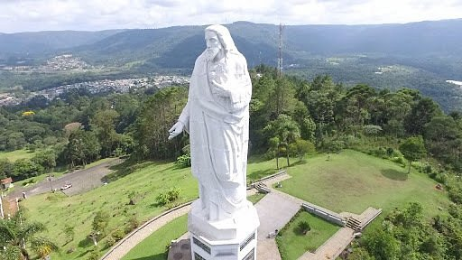
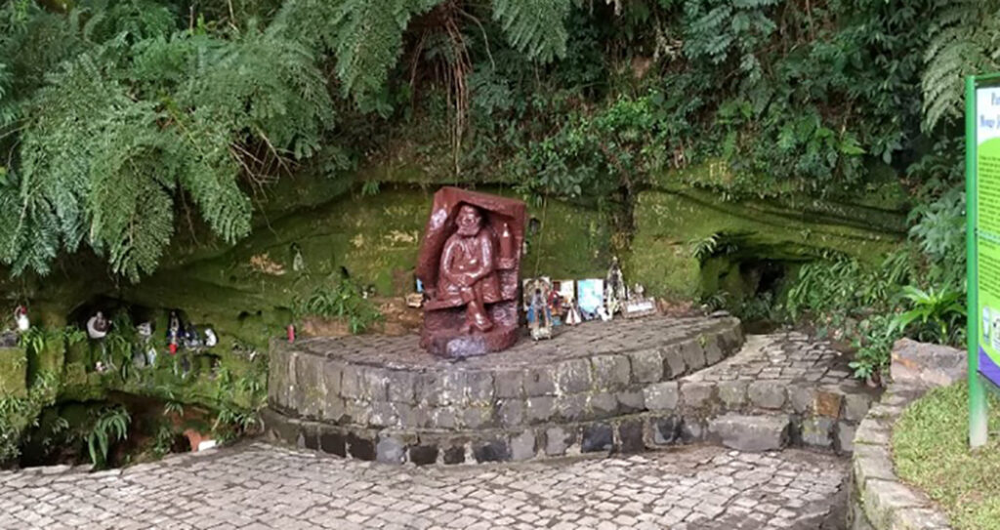
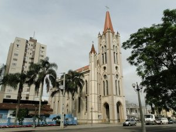
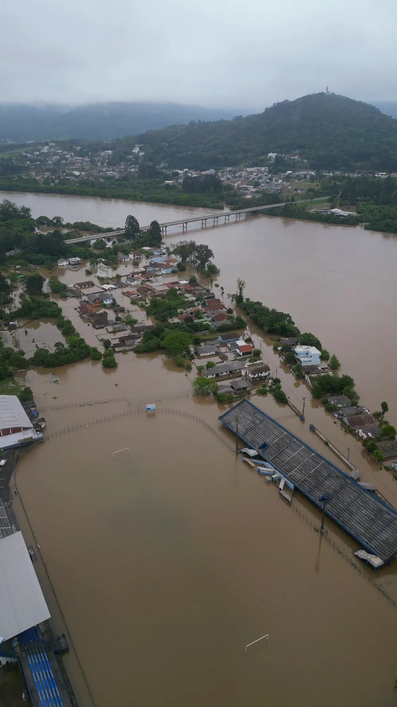

Imagens Originais - Sem alteração
   
Deixando as imagens da mesma largura
Deixando as imagens com a mesma largura e altura com distorção
Deixando as imagens com a mesma largura e altura sem distorção